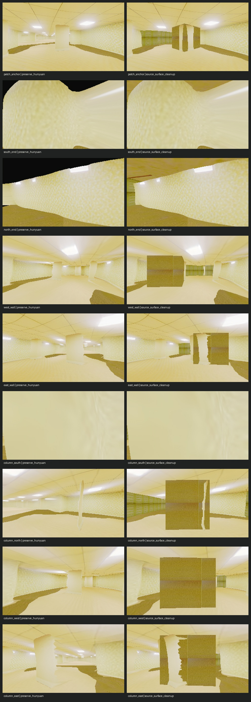

Hunyuan PSX Room | Round 1
Two authored treatments over the same Hunyuan visual and collision shell. Registration and scale are not accepted. No candidate is preselected.
Open authored layout proposal · Open paired contact sheet · Open evidence report
